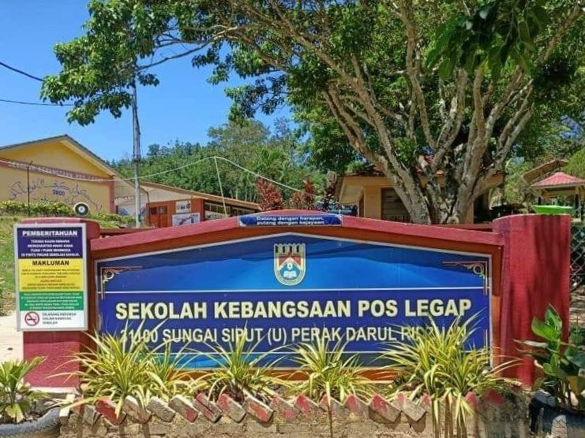
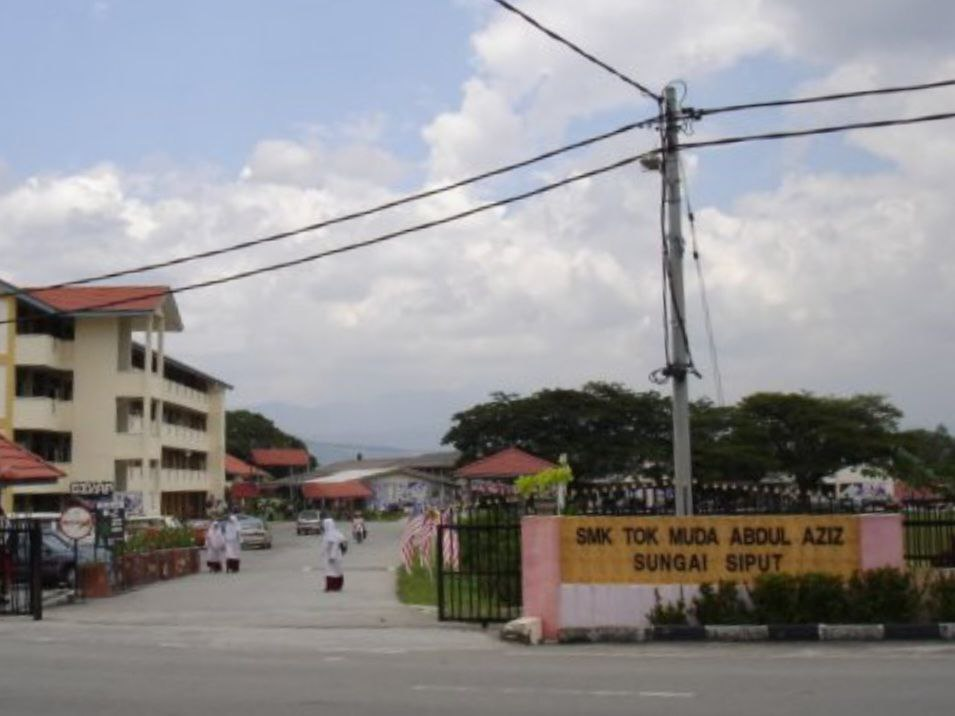
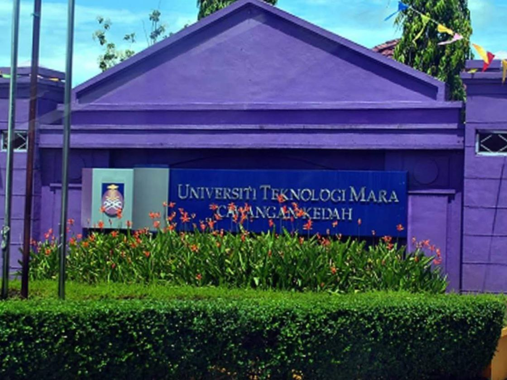

| School Name | Shcool Adress | |
|---|---|---|
|  | Sekolah Kebangsaan Pos Legap | ABA4051 SK Pos Legap Lasah 31100 Kuala Kangsar, Perak |
| Description | ||
| My Journey in Primary School at SK Pos Legap My time at SK Pos Legap was a foundational period in my life. Nestled in a serene countryside, the school provided a nurturing environment for learning. In 2015, I faced the UPSR exams, achieving 3A's and 2B's. This success was a testament to my hard work and the unwavering support from my teachers.Reflecting on my journey, I am grateful for the lessons learned and the strong foundation SK Pos Legap provided. The memories and values from my primary school years will always guide me in my future endeavors. | ||
| School Name | Shcool Adress | |
|---|---|---|
|  | SMK Toh Muda Abdul Aziz | AEA4085 Jalan Sentosa, 31100, Sungai Siput (U), Perak |
| SPM | STPM | |
| 4A 1B 4C | CGPA 3.67 | |
| Description | ||
| My journey at SMK Toh Muda Abdul Aziz from Form 4 to Form 6 (2019-2023) was transformative. Starting in 2019, I faced new academic challenges. Form 5 brought intense SPM preparations, fostering strong friendships through study sessions. The COVID-19 pandemic in 2020 shifted us to online learning, but we adapted and stayed connected. By Form 6, I embraced leadership roles and explored career paths. Graduation in 2023 was bittersweet, marking the end of an era filled with growth, learning, and unforgettable memories. I'm deeply grateful for the support and experiences I gained. | ||
| Campus | Campus Adress | |
|---|---|---|
|  | Universiti Teknologi MARA Kedah Branch | UiTM Kedah 08400 Merbok, Kedah |
| Description | ||
| Since starting degree educationat UiTM Kedah in September last year, my journey has been filled with growth and discovery. The vibrant campus and dedicated lecturers have provided a nurturing environment for learning. I've made wonderful friends and participated in various extracurricular activities that have enriched my experience. Each day at UiTM Kedah brings new opportunities to learn and excel, making my time here an invaluable part of my educational journey. | ||